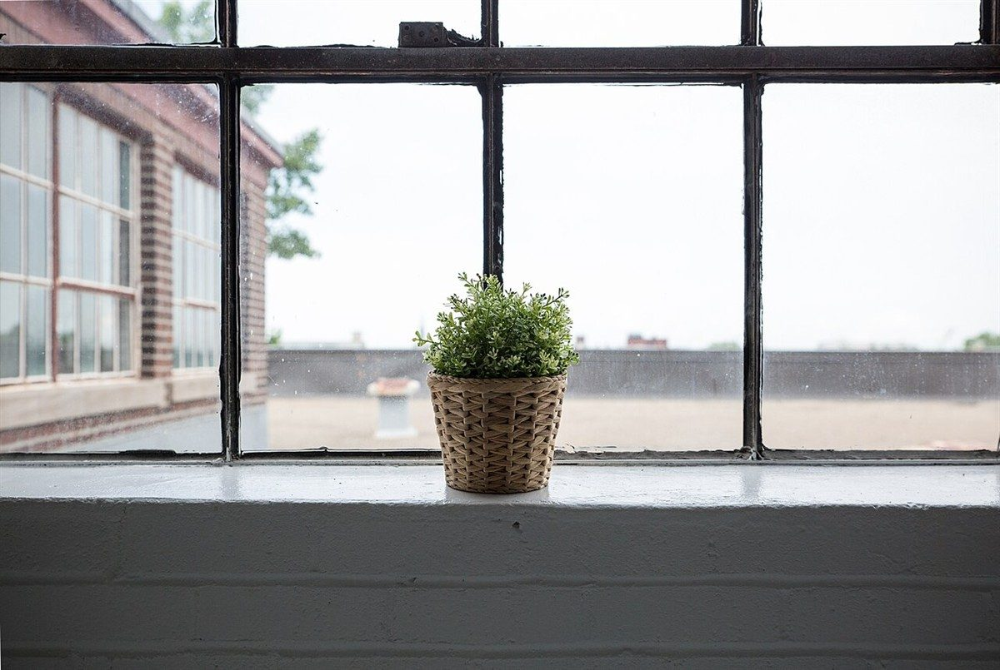
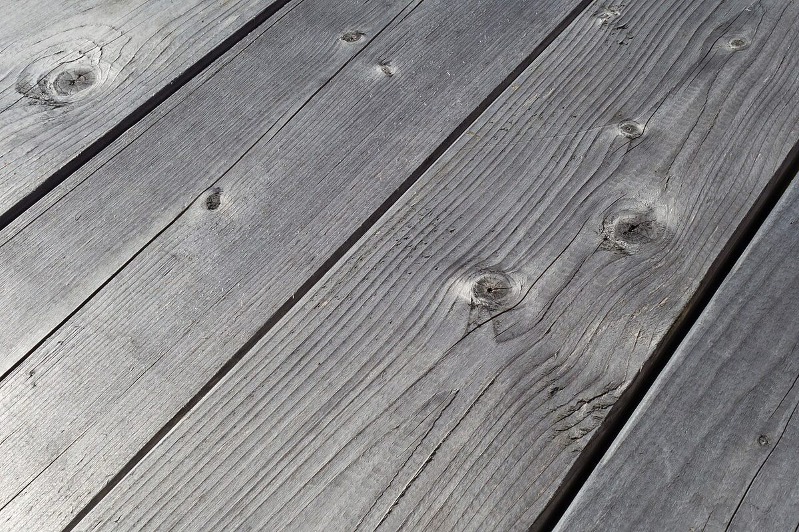
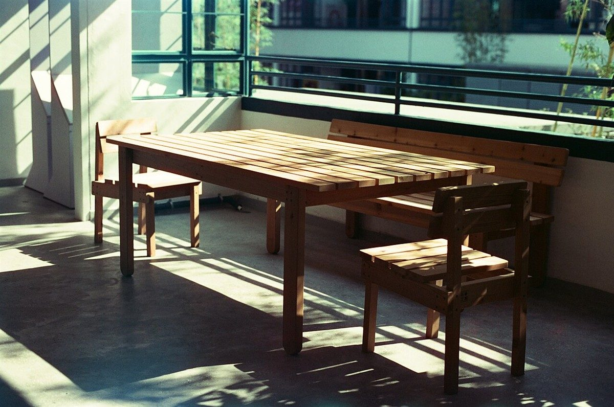

U+00A0
店のこと
改行しない空白
お店について確認できているのは、所在地とInstagramのアカウントだけです。
このページの「想像してみる」部分は、制作側が想像して書いたものです。お店の実際の様子・考え・メニューとは関係がありません。
確認できていること
- 店名は「Mimosa with Space」、業種はカフェ
- 所在地は島根県浜田市黒川町3743-5(〒697-0024)
- 電話番号はなし。連絡はInstagramから
- 営業時間・定休日・メニュー・価格・ご予約・駐車場は準備中

想像してみる
「離れない空白」という考え方
「改行しない空白(U+00A0)」は、前後の言葉が行の途中で泣き別れしないよう、つなぎ止めておく空白です。このページではそれにちなんで、ひと続きで眺めたい写真を3枚並べました。窓辺の植物、風化した木の板、光の縞が落ちるテーブルです。お店の中の様子ではなく、あくまで制作側が選んだイメージです。
制作側の連想です。お店の理念・屋号の由来とは無関係です。


